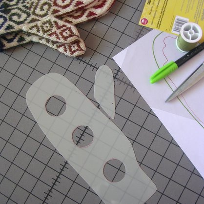
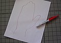
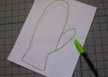
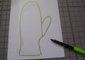
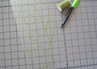
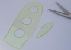

|
||
Premium Patterns Wintry Mix Mitts Love Bytes HawkeyeFree Patterns Kiddie Cadet Summerlin Ruffled Scarf Seamless DS Sock Simply Seamless Pouch Myriads of MushroomsExtras DIY Mitten Blocker Felt Patch Tutorial Yarn Dyeing Tutorial Needle Pouches Knitting Journal |
DIY Mitten BlockerDesigned by Alice Schnebly
 SuppliesOne sheet No-Melt Mylar Template Plastic (available in the quilting section of the craft store) I made these mitten blockers out of No-Melt Mylar Template plastic. They are totally heat safe and can be used for both steam and wet blocking. If you don’t ever plan to steam block your mittens, you can use regular template plastic. At my local Jo-Ann store one 12" x 18" sheet of the No-Melt Template Plastic costs $4.29, and a regular plastic sheet costs $3.29. If you can’t find a store that carries quilting supplies, you can easily make a mitten blocker from cardboard wrapped in packing tape to make it waterproof. This is the way I made my first mitten blocker and it worked just as well as my new plastic one! One sheet of plastic can be made into three adult sized mitten blockers – perfect for if you like making mittens for members of your family or as gifts. It’s a good idea to make mitten blockers for each of the main people you like to make mittens for, this way you know they’ll always be the perfect fit. Remember, you only need one blocker in each size because you can block your first mitten while knitting the second! So here’s how you make them… Tutorial1. Trace around your hand with fingers held together. If you already have a mitten that fits you perfectly, you can trace around that instead. 2. Make an outline around your hand tracing that is more "mitten shaped." My outline is about ¼" outside my original tracing. I left a little extra room above the tips of my fingers. Skip this step if your tracing was of an actual mitten. Draw a line separating the thumb from the rest of the hand. 3. Place your template plastic over the paper with the outline you've just created. Trace along the lines with a permanent marker. If you're using something like cardboard that isn't translucent you can cut out the outline then trace around it. 4. Use a spool of thread or a small circular shape and trace three circles down the center of your mitten shape. These will be cut out and the holes will help speed up the drying time of your mitten. 5. Cut out your mitten shape and the round circles in the center of your template. Smooth cuts are best. If there are any rough or jagged edges one the outside of your template they might snag your mitten. You can use some fine grit sandpaper to get out any little rough bits if needed. Round off any pointed edges of your mitten blocker, like at the base of the thumb and at the cuff to prevent snagging. You're finished! Now your mittens will always fit perfectly! |
   Recent ReviewsRecent Posts
 Our Favorites
|
| © 2007 KathrynIvy.com | ||
{kind=link}
{kind=link}
{kind=link}
{kind=link}
{kind=link}